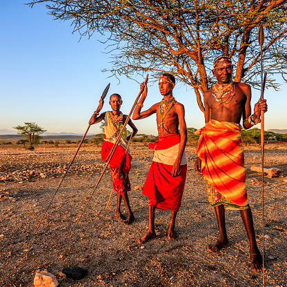

Cultura
A cultura de Quênia consiste em múltiplas tendências. O Quênia não possui uma cultura única e proeminente que a identifique. Em vez disso, é composto de várias culturas praticadas pelas diferentes comunidades do país. Por direito próprio, porém, o Quénia tem uma cultura predominantemente popular e multifacetada em virtude de um número extraordinário de tribos diferentes (cerca de 70), como os masai, os cambas, os quicuios e os calenjins.
